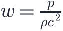
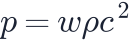
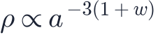
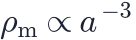
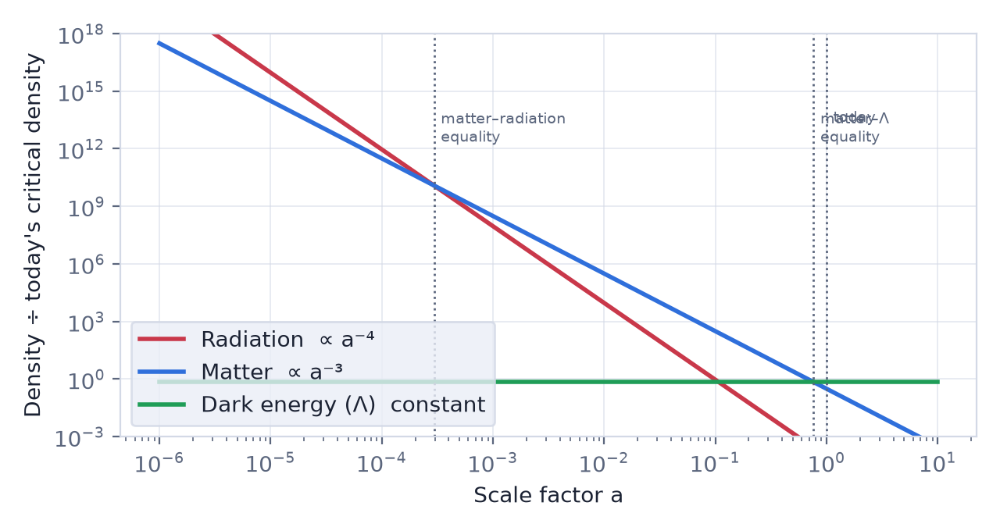
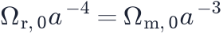
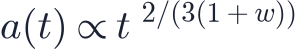

In this lesson you will learn
|
Describing a cosmic fluid
On large scales every component of the universe behaves like a smooth fluid with
an energy density and a pressure  . Their ratio is the
equation of state parameter
. Their ratio is the
equation of state parameter

Three values are fundamental:
| Component | Pressure | Examples | |
|---|---|---|---|
| Matter ("dust") | negligible | atoms, dark matter, galaxies | |
| Radiation | positive | photons, neutrinos in the early universe | |
| Cosmological constant | negative | vacuum energy, dark energy |
Why can matter be pressureless? The pressure of a gas comes from the random motion of its particles. For galaxies, stars and cold dark matter, these speeds are tiny compared with the speed of light, so and we can set . |
How each component dilutes
Put

into the fluid equation from lesson L2.3 and solve. For constant
- Matter, :

. The number of particles is fixed and the volume grows as .
. - Radiation, :
 . The number of
photons per volume drops as
. The number of
photons per volume drops as  , and each photon loses energy because its
wavelength is stretched by
, and each photon loses energy because its
wavelength is stretched by  .
. - Cosmological constant,
 : . It is
an energy of empty space itself, so more space means more of it.
: . It is
an energy of empty space itself, so more space means more of it.

Different ingredients dominate at different times Going back in time (), radiation grows fastest and must dominate the early universe. Later, matter takes over. Finally, as matter thins out, the constant dark energy density wins. Our universe has passed through all three eras. |
The three eras
Using the Planck 2018 values:
- Radiation era, until matter–radiation equality at ,
about 50 000 years after the Big Bang. Setting

gives . - Matter era, during which galaxies and large-scale structure grew.
- Dark energy era. Matter and dark energy densities became equal at , about 3.5 billion years ago. The expansion started to accelerate even a little earlier, at .
Expansion in each era
When one component dominates a flat universe, the Friedmann equation has a simple power-law solution:

| Era | Scale factor | Hubble parameter | |
|---|---|---|---|
| Radiation | |||
| Matter | |||
| Cosmological constant | = constant |
In the first two eras the expansion decelerates. With a cosmological constant the expansion rate stays constant, so the scale factor grows exponentially.
Acceleration needs w < -1/3 From the acceleration equation, .
Any component with accelerates the expansion. A cosmological constant
( |
Try it: Expansion History Explorer Set ΩΛ to zero and then increase it: watch the a(t) curve bend upward once dark energy dominates. |
Remember this
|